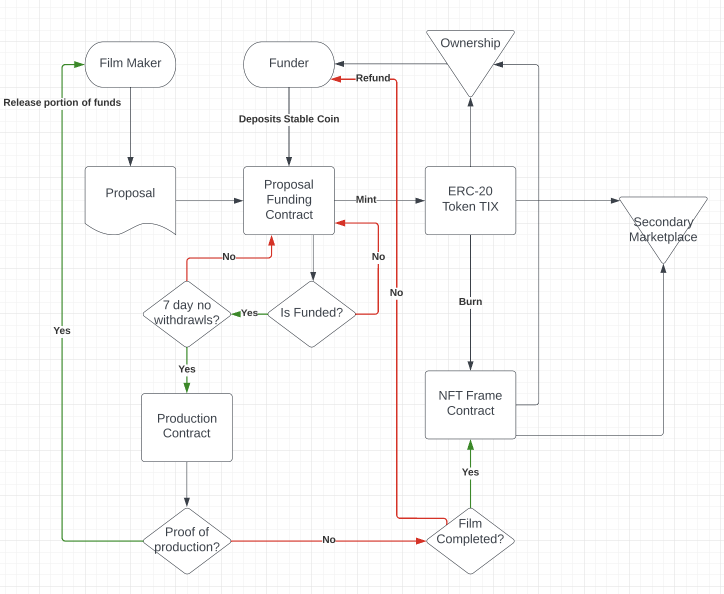

Table of Contents

Executive Summary CinemaFi presents a blockchain-based platform that addresses the funding challenges in the indie film industry. By integrating NFT technology with film production, CinemaFi offers an investment opportunity, allowing benefactors to own a part of the movie they fund.
When it comes to the motion picture market, funding for indie films is underserved. The film industry is worth an estimated $95.45 billion, with indie films accounting for just over 7% of that total amount. There is a lack of funding for these projects, and current solutions for indie film funding is not optimal. Studio films rank at the top of investment charts and sites like Indigo have a stigma that drives investors away. There are very few incentives for people outside of the film industry to fund dynamic projects.
CinemaFi - provides an alternate asset class.
Trade film frame NFTs on the open market, supporting both filmmakers and the platform through transaction fees.
Despite the indie film sector's contribution to the diversity and innovation within the broader film industry, it faces funding challenges that stifle potential and limit market access. Indie films account for a modest 7% of the estimated $95.45 billion film industry, underscoring a disparity in funding allocation compared to studio films. This gap is exacerbated by several contributing factors:
CinemaFileverages blockchain technology and Non-Fungible Tokens (NFTs) to bridge the gap between creative indie film projects and investors. Our platform aims to disrupt the traditional funding model by offering a transparent, secure, and inclusive ecosystem for filmmakers and retail investors alike.
Our solution is not just a funding platform but a movement towards a more equitable film industry, where unique stories find their audience and talents are nurtured and rewarded.
Indie filmmakers can submit their projects to the CinemaFi platform through an submission portal. This process involves providing detailed project information, including the script, budget, production timeline, and intended use of funds. The platform evaluates these submissions based on originality, feasibility, and potential market appeal to ensure a high-quality selection of projects for investors.
Investors on CinemaFi can browse a curated list of film projects, each with details about the storyline, production team, funding requirements, and estimated returns. Investors can make informed decisions based on their interests and investment strategy, whether they are seeking short-term profits, long-term cultural value, or wish to support specific genres or filmmakers.
The tokenization process involves converting film frames, sequences, and scenes into unique NFTs (Non-Fungible Tokens) on the blockchain. Each NFT represents a specific part of the film, allowing investors to own a piece of the movie. The process ensures that each NFT is distinct and securely recorded on the blockchain, providing clear ownership rights and authenticity.
Upon the completion of a film, NFTs are issued to investors as per their investment proportion. These NFTs not only represent ownership but can also offer additional benefits like access to exclusive content, voting rights on film-related decisions, or a share of the film's revenue. The distribution is managed through smart contracts, ensuring a transparent and efficient process.
Blockchain technology is at the heart of CinemaFi's platform, serving as the foundation for enhanced security, transparency, and tokenization in indie film funding. This decentralized ledger technology ensures that all transactions and NFT (Non-Fungible Token) creations are immutable and transparent. By using blockchain, CinemaFi provides a secure environment where each transaction is verified and recorded, reducing the risk of fraud and unauthorized alterations.
In the context of tokenization, blockchain enables CinemaFi to convert film frames, sequences, and scenes into digital assets in the form of NFTs. Each NFT represents a unique part of the film, allowing investors to own a specific portion of the movie. The transparency of blockchain ensures that each NFT's ownership and transaction history are openly verifiable, fostering trust among filmmakers and investors.
The smart contract system is a component of the CinemaFi platform. Developed on the Ethereum blockchain, these smart contracts are programmed to manage NFTs following standards such as ERC-721, ERC-165, and ERC-4494. They automate the process of royalty distributions, ensuring a fair and efficient division of revenue generated by the film.
When a film generates income from various sources like ticket sales, streaming rights, and other distribution channels, the revenue is automatically distributed to NFT holders based on the predefined terms of the smart contract.
The focus is on providing a sustainable and profitable model for all stakeholders involved in the platform.
The Cinemafi platform implements a well-structured fee system for NFT trading to ensure ongoing revenue generation and platform sustainability. This fee structure includes:
Investors in film projects via Cinemafi can expect returns based on the success of the films they invest in. The projection model includes:
The business model of CinemaFi is designed to create a win-win situation for filmmakers and investors. Key components include:
The CinemaFi model aims to democratize film financing, providing a transparent and efficient system for indie film production and investment.
Each frame is an NFT, certain assumptions and parameters are established. This model considers a standard frame rate of 24 frames per second and movies ranging from 10 to 90 minutes in length.
Each frame is minted as a unique NFT.
Total investment needed for film production: $X (to be determined by the filmmaker and financial analysts)
Value of Each Frame NFT = Total Investment / Total Number of Frames
Duration: Month 1 to Month 2
Goals:
Duration: End of Month 2
Goals:
Duration: Month 3 to Month 4
Goals:
Duration: Month 4 to Month 5
Goals:
Duration: Month 5 to Month 6
Goals:
Duration: End of Month 6
Goals:
After the official launch, the focus will shift to user retention, regular updates, and new feature rollouts based on user demand and market trends.
Our approach to compliance is multi-faceted, focusing on key areas to ensure that our operations align with legal norms and protect our stakeholders.
Our platform operates with a deep respect for intellectual property rights. We ensure that all NFTs representing film frames, sequences, and scenes are created and distributed with the explicit consent of the rights holders. This involves rigorous verification processes and legal agreements to avoid any infringement of copyright laws.
Given the investment nature of purchasing NFTs on our platform, we are vigilant in complying with securities laws. We continuously monitor the evolving regulations around digital assets to ensure that our NFTs meet the legal definitions and requirements set forth in various jurisdictions.
Protecting the privacy and data of our users is paramount. We comply with global data protection regulations, such as GDPR, ensuring that user data is handled securely, transparently, and with the necessary consent.
CinemaFi implements strict AML and KYC policies to prevent unlawful activities. Our platform incorporates identity verification processes for filmmakers and investors to ensure the legitimacy of transactions and to prevent financial crimes.
Active engagement with regulatory bodies and legal experts to stay ahead of regulatory changes. CinemaFi platform is designed to be adaptable, allowing us to implement compliance updates swiftly in response to new laws and regulations.
CinemaFi operates in a global market and hence adheres to the legal requirements of multiple jurisdictions. We plan to conduct thorough legal analyses to understand and comply with the laws in different regions where our platform is accessible.
Entrepreneur and film enthusiast, Alex Gonzalez is the driving force behind CinemaFi. With a passion for the indie film industry and a understanding of blockchain technology, Alex established CinemaFi to open film funding as an alternative class asset.
Nathan Van Hoozen, serving as the President and Co-Founder of CinemaFi, brings a unique blend of blockchain expertise and visionary leadership to the forefront of indie film funding innovation. With a background that spans across blockchain entrepreneurship, a role in claims analysis, and experience in sales, events, and finance. Before joining CinemaFi, Nathan honed his project management skills at Apeworx and Yearn, where he worked as a project manager for two years.
This document outlines the potential exit strategies for CinemaFi, providing our investors with a clear understanding of the future possibilities for realizing a return on their investment.
Our primary focus is on establishing a sustainable and profitable business model. We aim to continuously innovate and expand our market reach, ensuring the long-term growth and viability of CinemaFi.
An acquisition by a major player in the entertainment, tech, or blockchain industry is a potential exit strategy. This would offer a return for investors while ensuring the continuity and expansion of the CinemaFi platform.
As CinemaFi grows and becomes profitable, we may consider an IPO. Going public could provide returns for early investors and increase the visibility and credibility of our platform.
Forming strategic partnerships or considering mergers with key industry players could be a path towards a successful exit. This would allow for broader market access and the pooling of resources for mutual benefit.
We may explore options for creating a secondary market for investors to sell their stakes, providing liquidity and a potential exit opportunity prior to acquisition or IPO.
If feasible, CinemaFi might consider a buyback program for shares using revenue generated from the platform, offering investors an alternate route for exit.
Our exit strategy is designed to maximize investor returns while ensuring the sustainability and growth of CinemaFi. We are committed to exploring all possible avenues to achieve these goals.
CinemaFi represents a leap in the indie film industry, merging the realms of blockchain with film funding. It addresses the funding challenges faced by filmmakers but also opens up new avenues for investors to participate in the film industry in a meaningful and lucrative way.
Through the mechanism of tokenizing film frames as NFTs, CinemaFi creates an ecosystem where every stakeholder, from filmmakers to investors, benefits from the success of the film projects. This model promotes a more democratic, transparent, and accessible approach to film funding.
While navigating the complexities of this evolving landscape, CinemaFi is committed to legal compliance, ethical practices, and fostering community of film enthusiasts and investors.
CinemaFi is a platform that leverages blockchain technology and Non-Fungible Tokens (NFTs) to address the funding challenges in the indie film industry. The platform allows indie filmmakers to tokenize their film frames, sequences, and scenes into unique NFTs, which investors can purchase to fund the film projects.
Investors on CinemaFi can browse a curated list of film projects, make informed decisions based on their interests and investment strategy, and own a piece of the movie through NFTs. The NFTs not only represent ownership but can also offer additional benefits like access to exclusive content, voting rights on film-related decisions, or a share of the film's revenue.
Blockchain technology is the backbone of CinemaFi's innovative platform, serving as the foundation for enhanced security, transparency, and tokenization in indie film funding. The platform also implements a smart contract system for automatic royalty distributions, ensuring a fair and efficient division of revenue generated by the film.
CinemaFi has a fee system for NFT trading to ensure ongoing revenue generation and platform sustainability. The platform also provides a revenue-sharing model for film NFTs, creating a win-win situation for filmmakers and investors.
The platform is committed to legal and regulatory compliance, including intellectual property rights, securities law compliance, data protection and privacy, Anti-Money Laundering (AML) and Know Your Customer (KYC) policies, and global jurisdictional considerations.
In conclusion, CinemaFi represents a leap in the indie film industry, merging the innovative realms of blockchain and NFTs with film funding. It promotes a more democratic, transparent, and accessible approach to film funding, benefiting stakeholders from filmmakers to investors.
